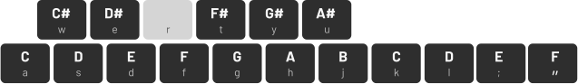

<button (click)="showKeymap = true" class='keymap-trigger-btn'>Keymap</button>
<vd-synth></vd-synth>

<footer>
    <p class="credits">

        <span>Created by <a href="https://lakshya.dev">Lakshya</a>
        </span>
        <span class="spacer">|</span>
        <span class="credits"> Samples credits
            <a href="https://freesound.org/people/KlangRaumWort/sounds/574377/">1</a>
            <a href="https://freesound.org/people/KlangRaumWort/sounds/574070/">2</a>
            <a href="https://freesound.org/people/KlangRaumWort/sounds/533288/">3</a>
        </span>
        <span class="spacer">|</span>
        <span (click)='showTroubleshooting = !showTroubleshooting' class="troubleshooting"> Audio broken?</span>
    </p>
</footer>
<div *ngIf="showTroubleshooting || showKeymap" (click)="showTroubleshooting = false; showKeymap = false"
    class="blanket"></div>

<div class="modal keymap" *ngIf="showKeymap">
    <h3>Key Map</h3>
    
</div>

<div class="modal" *ngIf="showTroubleshooting">
    <h3>Known issues</h3>
    <ul>
        <li>If you're using a wireless output device, you might experience lag.</li>
        <li>Firefox has an issue with gain interpolation which might cause broken audio.</li>
    </ul>
</div>